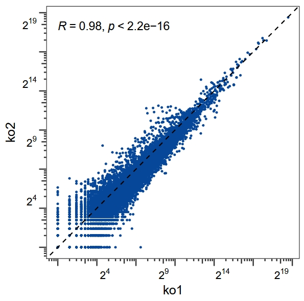

obj <- get_counts(obj, nThreads = 15)
# check
str(obj@counts)
# List of 2
# $ rpf:'data.frame': 14647 obs. of 4 variables:
# ..$ wt1: num [1:14647] 1 15 482 616 239 935 262 101 647 274 ...
# ..$ wt2: num [1:14647] 1 15 482 616 239 935 262 101 647 274 ...
# ..$ ko1: num [1:14647] 0 43 491 783 323 ...
# ..$ ko2: num [1:14647] 0 21 280 464 90 713 232 64 543 290 ...
# $ rna:'data.frame': 57169 obs. of 4 variables:
# ..$ wt1: num [1:57169] 6 1 2 0 0 2 5 7 0 0 ...
# ..$ wt2: num [1:57169] 6 1 2 0 0 2 5 7 0 0 ...
# ..$ ko1: num [1:57169] 6 0 1 0 0 1 6 9 0 0 ...
# ..$ ko2: num [1:57169] 3 1 0 0 0 1 7 1 0 0 ...Global gene expression analysis
Intro
In addition to analyzing ribosome profiling (Ribo-seq) data from the perspective of codon usage, amino acid composition, or other sequence-based features, a key focus in translational research lies in assessing changes in gene-level expression and translational regulation. Specifically, researchers are often interested in how translational efficiency (TE) and mRNA abundance vary across different conditions.
This section introduces how to use the riboTransVis toolkit for global RNA and RPF (Ribosome-Protected Fragment) quantification, differential expression analysis, and calculation of translational efficiency. By integrating Ribo-seq and RNA-seq data, riboTransVis facilitates systematic identification of genes with altered protein synthesis, enabling insights into translational control mechanisms that cannot be captured by transcriptome data alone.
Through this approach, we aim to provide a comprehensive framework for analyzing genome-wide translational changes, which can support functional discovery and reveal phenomena such as selective translation, stress response adaptation, and oncogenic translation reprogramming.
Quantify gene expression with counts
The get_counts() function utilizes the featureCounts algorithm from the Rsubread package to efficiently quantify gene-level expression from RNA-seq and Ribo-seq data. By default, it performs read counting over exon features for RNA-seq and coding sequence (CDS) features for RPF (ribosome-protected fragments) data. Users can explicitly specify the annotation features used for quantification via the options: rna_feature = “exon” and ribo_feature = “CDS”.
Additionally, if the BAM files are aligned to the genome, Rsubread’s featureCounts is used for quantification. If instead the BAM files are aligned to the transcriptome, the function directly obtains read counts from the BAM files themselves.
The resulting count information is stored in the counts slot of the input object:
Correlation plot
Plot the correlation for the replicates based on counts data:
rna <- obj@counts$rna
cor_plot(data = rna,x = "ko1",y = "ko2")
Extract normalized expression
The function get_normalized_reads calculates RNA, RPF, and translation efficiency (TE). The normalized values for RNA and RPF are standardized using TPM values, while translation efficiency (TE) is defined as:
\[ \text{TE (translation efficiency)} = \frac{\text{RPF}_tpm}{\text{RNA}_tpm} \tag{1} \]
norm <- get_normalized_reads(object = obj,
type = c("rna", "ribo", "te"))
# check
str(norm)
# List of 3
# $ tpm.rna :'data.frame': 57169 obs. of 5 variables:
# ..$ wt1 : num [1:57169] 0.2551 0.0344 0.0154 0 0 ...
# ..$ wt2 : num [1:57169] 0.2551 0.0344 0.0154 0 0 ...
# ..$ ko1 : num [1:57169] 0.22734 0 0.00686 0 0 ...
# ..$ ko2 : num [1:57169] 0.1312 0.0354 0 0 0 ...
# ..$ gene_name: chr [1:57169] "A1BG" "A1BG-AS1" "A1CF" "A2M" ...
# $ tpm.ribo:'data.frame': 14647 obs. of 5 variables:
# ..$ wt1 : num [1:14647] 0.0257 0.6961 50.8271 81.9381 17.6403 ...
# ..$ wt2 : num [1:14647] 0.0257 0.6961 50.8271 81.9381 17.6403 ...
# ..$ ko1 : num [1:14647] 0 1.44 37.4 75.23 17.22 ...
# ..$ ko2 : num [1:14647] 0 1.24 37.61 78.61 8.46 ...
# ..$ gene_name: chr [1:14647] "A1CF" "A4GALT" "AAAS" "AACS" ...
# $ te :'data.frame': 14647 obs. of 5 variables:
# ..$ wt1 : num [1:14647] 1.672 0 0.394 8.632 19.743 ...
# ..$ wt2 : num [1:14647] 1.672 0 0.394 8.632 19.743 ...
# ..$ ko1 : num [1:14647] 0 9.397 0.427 9.333 22.229 ...
# ..$ ko2 : num [1:14647] NaN 0 0.554 9.186 27.907 ...
# ..$ gene_name: chr [1:14647] "A1CF" "A2ML1" "A4GALT" "AAAS" ...Differential analysis
The gene_differential_analysis function uses DESeq2 to perform differential expression analysis separately on RNA or RPF data and returns the corresponding results:
diff.rna <- gene_differential_analysis(obj,
type = "rna",
control_samples = c("wt1","wt2"),
treat_samples = c("ko1","ko2"))
# check
head(diff.rna)
# baseMean log2FoldChange lfcSE stat pvalue padj gene_name type
# A1BG 5.0888259 -0.2345798 1.248392 -0.1879055 0.8509508 NA A1BG nonSig
# A1BG-AS1 0.7829185 -0.6432696 3.213131 -0.2002002 0.8413240 NA A1BG-AS1 nonSig
# A1CF 1.1471459 -1.8219647 2.754492 -0.6614522 0.5083223 NA A1CF nonSig
# A2ML1 1.4697527 -0.7623221 2.236789 -0.3408109 0.7332459 NA A2ML1 nonSig
# A2ML1-AS1 5.9189416 0.6372937 1.177298 0.5413188 0.5882879 NA A2ML1-AS1 nonSig
# A2ML1-AS2 5.5834917 -0.4017920 1.313643 -0.3058609 0.7597106 NA A2ML1-AS2 nonSig
diff.ribo <- gene_differential_analysis(obj,
type = "ribo",
control_samples = c("wt1","wt2"),
treat_samples = c("ko1","ko2"))
# check
head(diff.ribo)
# baseMean log2FoldChange lfcSE stat pvalue padj gene_name type
# A1CF 0.5143687 -2.5281257 4.5894024 -0.5508616 0.581728523 NA A1CF nonSig
# A4GALT 22.3216385 0.9254935 0.6865945 1.3479477 0.177675211 0.6322686 A4GALT nonSig
# AAAS 427.6743989 -0.4642721 0.1766959 -2.6275206 0.008600965 0.1247037 AAAS nonSig
# AACS 609.1352834 -0.1178472 0.1558609 -0.7561051 0.449586198 0.8723837 AACS nonSig
# AADAT 210.8025653 -0.4692803 0.3222716 -1.4561639 0.145347309 0.5805468 AADAT nonSig
# AAGAB 921.2909124 -0.1293514 0.1392711 -0.9287745 0.353005973 0.8165758 AAGAB nonSigTranslation efficiency differential analysis
The TE_differential_analysis function performs a differential analysis of translation efficiency. Users can select either RiboReX or Xtail as their preferred tool for this analysis:
# use riborex for te analysis
te.rex <- TE_differential_analysis(object = obj,
pkg = "riborex",
control_samples = c("wt1","wt2"),
treat_samples = c("ko1","ko2"))
# check
str(te.rex)
# List of 2
# $ deg_raw :Formal class 'DESeqResults' [package "DESeq2"] with 7 slots
# .. ..@ priorInfo : list()
# .. ..@ rownames : chr [1:13204] "A4GALT" "AAAS" "AACS" "AADAT" ...
# .. ..@ nrows : int 13204
# .. ..@ elementType : chr "ANY"
# .. ..@ elementMetadata:Formal class 'DFrame' [package "S4Vectors"] with 6 slots
# .. .. .. ..@ rownames : NULL
# .. .. .. ..@ nrows : int 6
# .. .. .. ..@ elementType : chr "ANY"
# .. .. .. ..@ elementMetadata: NULL
# .. .. .. ..@ metadata : list()
# .. .. .. ..@ listData :List of 2
# .. .. .. .. ..$ type : chr [1:6] "intermediate" "results" "results" "results" ...
# .. .. .. .. ..$ description: chr [1:6] "mean of normalized counts for all samples" "log2 fold change (MLE): EXTRA1 treated vs control" "standard error: EXTRA1 treated vs control" "Wald statistic: EXTRA1 treated vs control" ...
# .. ..@ metadata :List of 6
# .. .. ..$ filterThreshold: Named num 93
# .. .. .. ..- attr(*, "names")= chr "40.71429%"
# .. .. ..$ filterTheta : num 0.407
# .. .. ..$ filterNumRej :'data.frame': 50 obs. of 2 variables:
# .. .. .. ..$ theta : num [1:50] 0 0.0194 0.0388 0.0582 0.0776 ...
# .. .. .. ..$ numRej: num [1:50] 112 116 116 117 118 118 118 120 121 124 ...
# .. .. ..$ lo.fit :List of 2
# .. .. .. ..$ x: num [1:50] 0 0.0194 0.0388 0.0582 0.0776 ...
# .. .. .. ..$ y: num [1:50] 114 115 116 117 117 ...
# .. .. ..$ alpha : num 0.1
# .. .. ..$ lfcThreshold : num 0
# .. ..@ listData :List of 6
# .. .. ..$ baseMean : num [1:13204] 56.7 246.1 341.4 143.7 568 ...
# .. .. ..$ log2FoldChange: num [1:13204] 0.0106 -0.1939 0.0381 -0.1659 0.0415 ...
# .. .. ..$ lfcSE : num [1:13204] 0.578 0.285 0.241 0.54 0.208 ...
# .. .. ..$ stat : num [1:13204] 0.0183 -0.681 0.158 -0.3072 0.1996 ...
# .. .. ..$ pvalue : num [1:13204] 0.985 0.496 0.874 0.759 0.842 ...
# .. .. ..$ padj : num [1:13204] NA 0.915 0.983 0.968 0.98 ...
# $ deg_anno:'data.frame': 13204 obs. of 8 variables:
# ..$ baseMean : num [1:13204] 56.7 246.1 341.4 143.7 568 ...
# ..$ log2FoldChange: num [1:13204] 0.0106 -0.1939 0.0381 -0.1659 0.0415 ...
# ..$ lfcSE : num [1:13204] 0.578 0.285 0.241 0.54 0.208 ...
# ..$ stat : num [1:13204] 0.0183 -0.681 0.158 -0.3072 0.1996 ...
# ..$ pvalue : num [1:13204] 0.985 0.496 0.874 0.759 0.842 ...
# ..$ padj : num [1:13204] NA 0.915 0.983 0.968 0.98 ...
# ..$ gene_name : chr [1:13204] "A4GALT" "AAAS" "AACS" "AADAT" ...
# ..$ type : chr [1:13204] "nonSig" "nonSig" "nonSig" "nonSig" ...Xtail for differential analysis:
te.xtail <- TE_differential_analysis(object = obj,
pkg = "xtail",
control_samples = c("wt1","wt2"),
treat_samples = c("ko1","ko2"),
min_count = 4)
# Calculating the library size factors
# 1. Estimate the log2 fold change in mrna
# converting counts to integer mode
# 2. Estimate the log2 fold change in rpf
# converting counts to integer mode
# 3. Estimate the difference between two log2 fold changes
# 4. Estimate the log2 ratio in first condition
# converting counts to integer mode
# 5. Estimate the log2 ratio in second condition
# converting counts to integer mode
# 6. Estimate the difference between two log2 ratios
# Number of the log2FC and log2R used in determining the final p-value
# log2FC: 7530
# log2R: 5484
# check
str(te.xtail)
# List of 2
# $ deg_raw :Formal class 'xtail' [package ""] with 4 slots
# .. ..@ listData :List of 5
# .. .. ..$ resultsTable :Formal class 'DFrame' [package "S4Vectors"] with 6 slots
# .. .. .. .. ..@ rownames : chr [1:13014] "A4GALT" "AAAS" "AACS" "AADAT" ...
# .. .. .. .. ..@ nrows : int 13014
# .. .. .. .. ..@ elementType : chr "ANY"
# .. .. .. .. ..@ elementMetadata: NULL
# .. .. .. .. ..@ metadata : list()
# .. .. .. .. ..@ listData :List of 11
# .. .. .. .. .. ..$ mRNA_log2FC : num [1:13014] 0.907 -0.283 -0.172 -0.32 -0.189 ...
# .. .. .. .. .. ..$ RPF_log2FC : num [1:13014] 0.908 -0.481 -0.134 -0.487 -0.145 ...
# .. .. .. .. .. ..$ log2FC_TE_v1 : num [1:13014] 0.00488 -0.19712 0.03861 -0.16493 0.04371 ...
# .. .. .. .. .. ..$ pvalue_v1 : num [1:13014] 0.938 0.41 0.861 0.632 0.813 ...
# .. .. .. .. .. ..$ control_log2TE : num [1:13014] -2.485 1.119 1.128 0.458 0.722 ...
# .. .. .. .. .. ..$ treated_log2TE : num [1:13014] -2.484 0.921 1.166 0.291 0.765 ...
# .. .. .. .. .. ..$ log2FC_TE_v2 : num [1:13014] 0.0106 -0.1984 0.0378 -0.167 0.0431 ...
# .. .. .. .. .. ..$ pvalue_v2 : num [1:13014] 0.985 0.309 0.823 0.618 0.773 ...
# .. .. .. .. .. ..$ log2FC_TE_final: num [1:13014] 0.0106 -0.1971 0.0386 -0.1649 0.0437 ...
# .. .. .. .. .. ..$ pvalue_final : num [1:13014] 0.985 0.41 0.861 0.632 0.813 ...
# .. .. .. .. .. ..$ pvalue.adjust : num [1:13014] 1 1 1 1 1 ...
# .. .. ..$ log2FC_determine_num: int 7530
# .. .. ..$ log2R_determine_num : int 5484
# .. .. ..$ condition1 : chr "control"
# .. .. ..$ condition2 : chr "treated"
# .. ..@ elementType : chr "ANY"
# .. ..@ elementMetadata: NULL
# .. ..@ metadata : list()
# $ deg_anno:'data.frame': 13014 obs. of 10 variables:
# ..$ log2FC_TE_v1 : num [1:13014] 0.00488 -0.19712 0.03861 -0.16493 0.04371 ...
# ..$ pvalue_v1 : num [1:13014] 0.938 0.41 0.861 0.632 0.813 ...
# ..$ treated_log2TE : num [1:13014] -2.484 0.921 1.166 0.291 0.765 ...
# ..$ log2FC_TE_v2 : num [1:13014] 0.0106 -0.1984 0.0378 -0.167 0.0431 ...
# ..$ pvalue_v2 : num [1:13014] 0.985 0.309 0.823 0.618 0.773 ...
# ..$ log2FC_TE_final: num [1:13014] 0.0106 -0.1971 0.0386 -0.1649 0.0437 ...
# ..$ pvalue_final : num [1:13014] 0.985 0.41 0.861 0.632 0.813 ...
# ..$ pvalue.adjust : num [1:13014] 1 1 1 1 1 ...
# ..$ type : chr [1:13014] "nonSig" "nonSig" "nonSig" "nonSig" ...
# ..$ gene_name : chr [1:13014] "A4GALT" "AAAS" "AACS" "AADAT" ...GitHub - smithlabcode/riborex: Riborex: Fast and flexible identification of differential translation from Ribo-seq data
GitHub - xryanglab/xtail: Genome-wide assessment of differential translations with ribosome profiling data